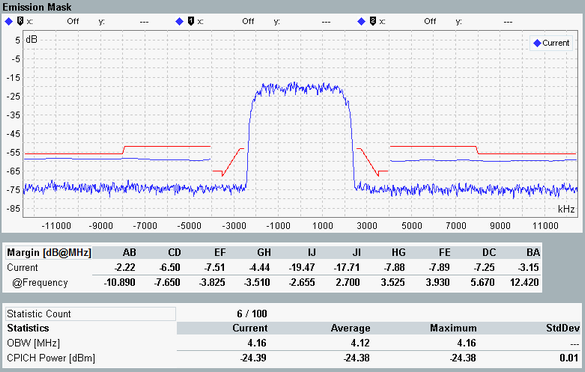

The spectrum emission of the NodeB is measured in the "Preselected Slot". The results are displayed in a diagram and as a table of statistical results.

The measurement covers a symmetric, 25 MHz wide frequency range around the NodeB center carrier frequency. The maximum display range is [carrier frequency ±12.5 MHz]. According to the specification 3GPP TS 25.141, section 6.5.2.1, a resolution filter of Gaussian shape with a bandwidth of 30 kHz or 1 MHz is used. All measured spectrum emission values are relative to the NodeB output power measured in a 3.84 MHz bandwidth (reference power).
The example shows results measured with the 30 kHz filter bandwidth (lower blue curve, including the center) and 1 MHz bandwidth (curves at offset frequencies larger than 4 MHz).
The margin table below the diagram contains values which are relevant for the limit check; see "Spectrum Emission Mask Limits".
The "Margin" values indicate the vertical distance between the spectrum emission mask and the result trace. Within each limit line section (e.g. AB), the margin represents the "worst" value, i.e. the maximum determined for the frequencies of the section:
Margin = maximum (P(f)trace - P(f)mask)
A positive margin indicates that the limit is exceeded. The X-position of each margin (frequency offset at which the margin has been found) is displayed below the margin value.
The "Statistics" table displays occupied bandwidth (OBW) and the current CPICH power. For CPICH power, only channels with channelization code c256, 0 are considered. Each current value is averaged over a frame.
The OBW is defined as width of a frequency range around the assigned channel frequency containing 99% of the total integrated power of the transmitted spectrum.
For additional information, refer to "Common View Elements".